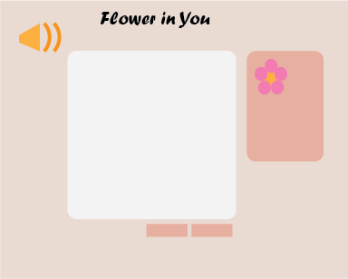
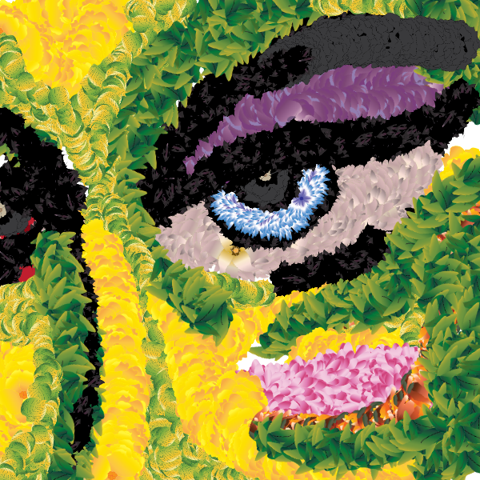
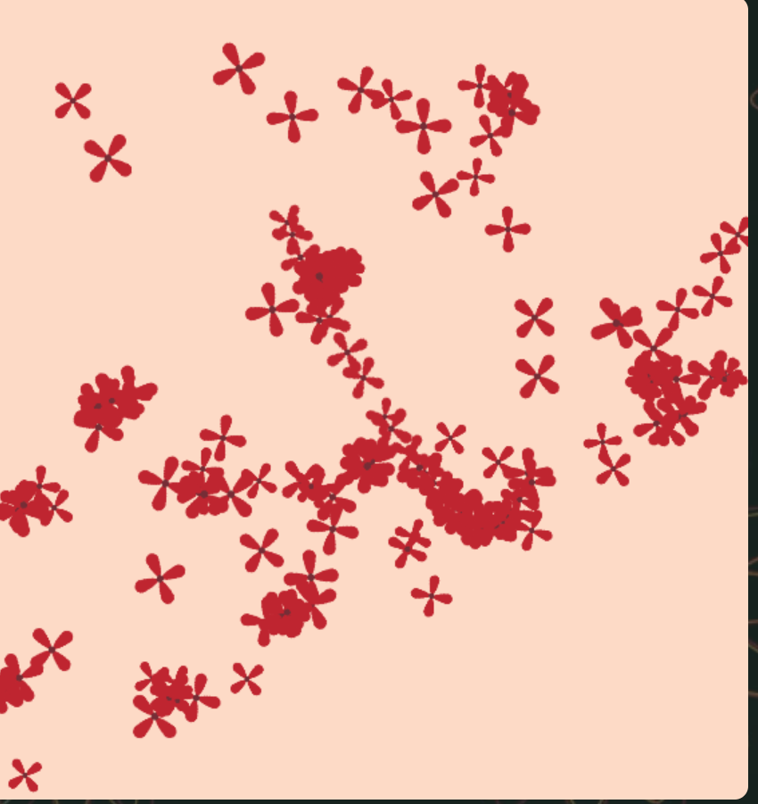
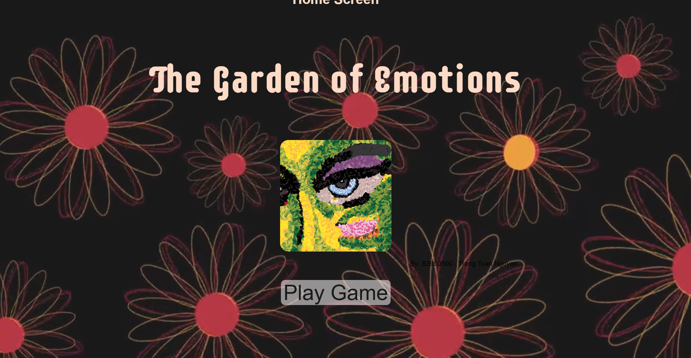
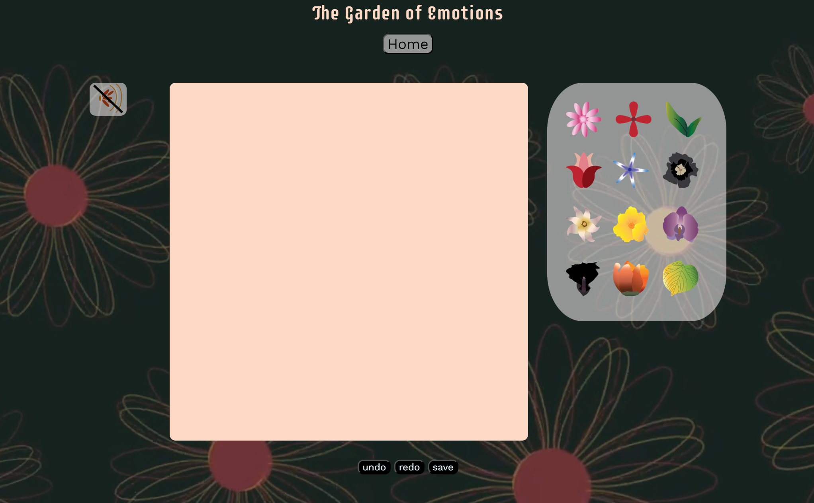
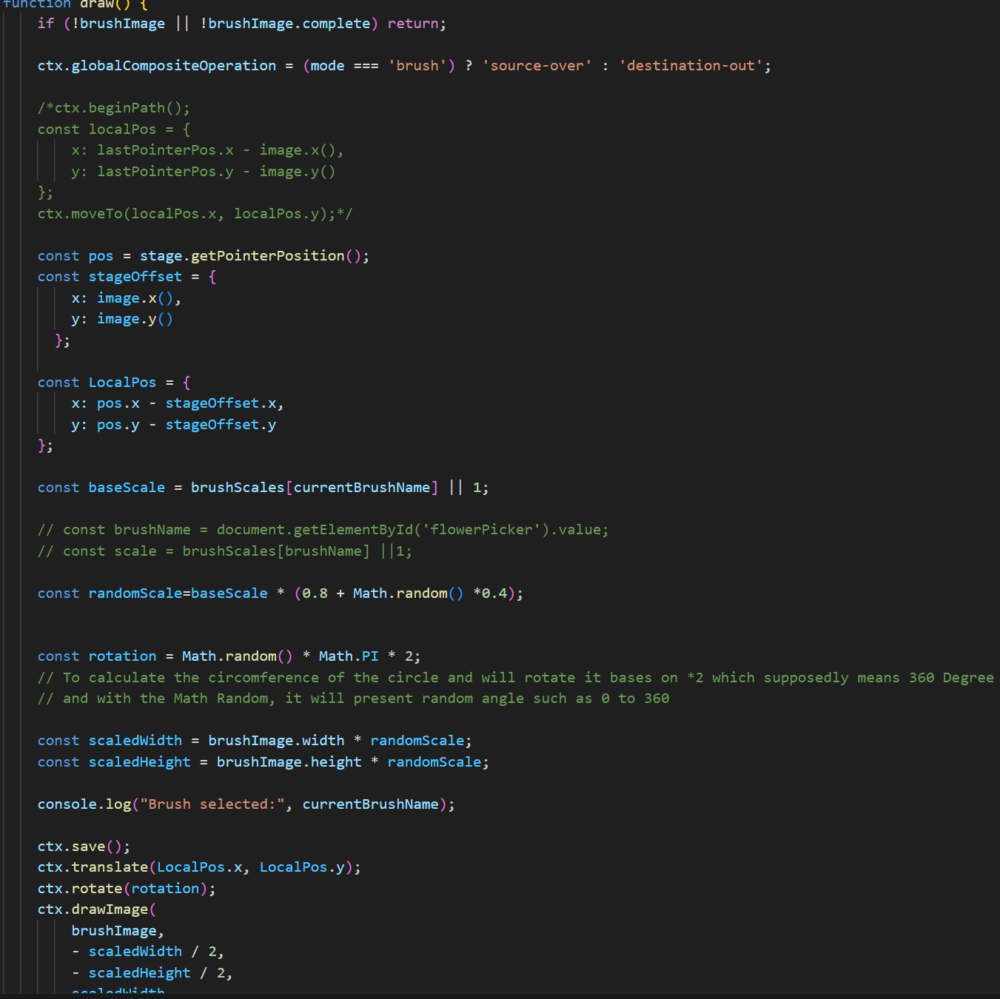
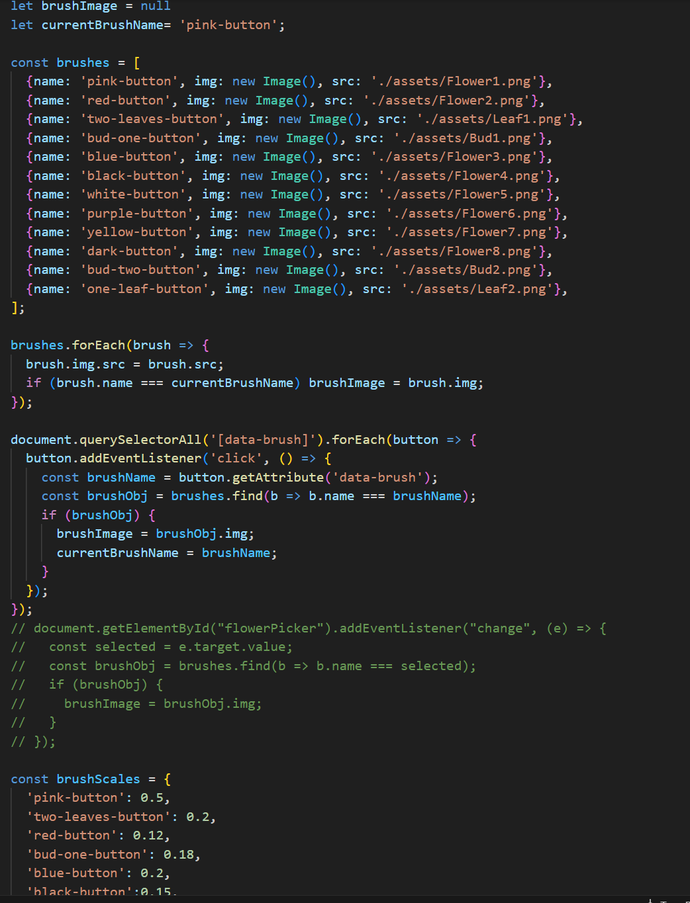
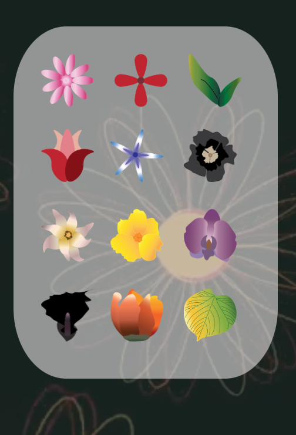

1. Judgments of purpose: Your desired outcome for the project - what did you want it to do?
I was meaning to make it into a website presenting emotions as a way to make arts. I've
chosen to make the speed of the mouse which is the brush, it will directly correspond with the
randomness of the flowers. There was also Limited amount of brush shapes and colors to pick from.
therefore, whatever the viewers were feeling and wanting to make the outcome, they will need to be a
bit more creative and they could also able to work with the limitations of the website that I
made compared to normal digital painting platforms

2. Judgments of worth: What values, besides novelty, were important for the project?
For this project, I really focused on the immersiveness and engagement of the atmosphere and
I wanted to make the project reflect myself as someone who enjoy peace, therefore, beyond the
experience. I wanted to make it feels peaceful and and fun to do so, by wanting the experience
feels more emmergence, I've chosen to make the brush directly reflect the player's emotions by
making slower and timid brush placement will be more harmonous while faster became more chaotic

3. Judgments of framing: What were the limitations (conceptual and/or technical) you placed on the project's design space?
As my project focused a lot on friction, I've chosen to make the amount of brushes and colors
to be more limited and so as the brush shapes, mainly because I wanted to make players be more
creative when it came to "The Garden of Emotions" and needing to work a bit harder and more
timid if they wanted. I've also added the randomness as a limitation for the player because I
wanted them to paint with their emotions more. I stumbled upon some problems when it came to
this as at first, I chose to not include the undo and redo buttons to make it more challenging
for player similarly to how emotions can't be undo and redo. However, bases on many tests, I
did not want to make the whole experience feels stressful and player needed to think before
moving the brush since I don't want them to be careful that was why a decision has been made
to include undo and redo button to make it less stressful but more peaceful.

4. Judgments of appearance: What were your choices and intentions in relation to the style/character/aesthetics of the project?
The aesthetic of "The Garden of Emotions" stayed quite similar to my original design in Assignment 2 pitch.
Since I've already decided early on to implement pastel colours and a soft, cute visual style such as rounded
fonts and curvy flower brush shapes and assets border and symbols. These elements were chosen to emphasize
the peaceful and therapeutic tone that I wanted users to experience.One major visual change I made was switching
the background to a darker tone. This created contrast and helped the interactive elements to stand out more.
Hover animations was added to the buttons to give visual feedback and guide the players through the experience.
Later in development, I changed the background into a moving video background with ambient background music.
These helpe dto enhance the immersive, calming mood I was aiming for, although they introduced some technical
challenges.


5. Judgments of quality: What choices did you make about the technical implementation of the project?
The core interactive feature of my project was the custom brush system, which I implemented using Konva.js. This
library allowed me to create brushes that visually reflect the speed of the user’s movement. This made the brushes
feel more responsive and expressive, it took multiple rounds of tweaking, especially when it came to smoothing the
shapes and layering of the strokes.Another challenge I faced was the implementation of the video background and
ambient music. My original video file was too large to upload on GitHub, and it couldn't commit. I solved this by
compressing the video to under 8MB and pushing assets separately. However, even after fixing that, video performance
was still affecting the experience as it took a while to load and sometimes it was lagging. To improve performance in
the future if I chose to further developing this game, I would like to replace the video with a CSS-animated background
however, it's going to be quite a hard skill to do. Furthermore, I will also look more into Tone.js to create my own
music. Overall, I made some trade offs between immersion and performance, and chose to keep the experience visually rich
and intriging for player, even when it led to some performance problems.



6. Judgments of composition: How did you balance the project as a gestalt whole?
When making the structure of “The Garden of Emotions,” I wanted all of the elements such as the visuals, the interactivity
and ambient sound to work together toward one unified final project about creating a calm, peaceful, and expressive digital
art space. From the beginning, I knew the paintbrushes would be the main interactive focus therefore, I spent a lots of
time on it, also I chose to make the rest of the experience supported that interaction rather than distracting from it. The
background, audio, and all the effects were designed to feel soft and not too intrusive. I tried to be careful not to
overcrowd the screen, that's why, I chose to keep it a bit more minimal so the player could focus on the meditative act of
emotional painting. Since the brush strokes responds directly to the speed, this further reinforces the idea of slowing down
and being present just like me as a person and I tried to convey that from both visually and interactively. Throughout the
process, I made different choices to keep the aesthetic and the user experience aligned. I avoided gamified mechanics such
as scoring systems, win and lose mechanics or other distractions that might affect the mood. In terms of layout, I kept
transitions simple and used clear navigation to maintain flow. Although I faced many challenges I still chose to focus on
making the whole experience convey what was intended from emotions to technicalities
7. Judgments of navigation: What did you choose to prioritise during your project's development?
For the project, I prioritise the technical aspect of the game most as I spent a lots of time
and efforts into making it work like what was intended, such as the way the brushes work and
how it could be randomized. So much efforts were used to perfect the brushes and its functions.
I been through some very rough time when it came to making a completely new brushe shapes that
works on the canvas